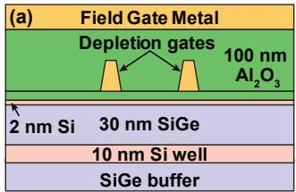
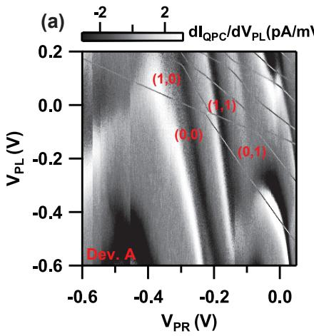

物理图像
在串联双量子点的 (1,1) 区，左右各有一个电子。把其中一个电子隧穿到对侧进入 (0,2) 区时，目标量子点需要容纳两个电子。若这两个电子处于自旋单态 ，则自旋部分反对称、空间部分对称，可以同占基态轨道 （按泡利不相容原理仍允许，因为轨道波函数对称）；若处于三重态之一 ，自旋部分对称、空间部分必须反对称，两个电子必须分占两个不同轨道 与 ，能量高出单态一个单点内的单态–三重态能隙 。因此在正失谐 区
- 单态基态为 ；
- 三重态基态仍为 （因 能量高出 ）。
把任意初始自旋态脉冲到这一失谐区，单态会发生 (1,1)→(0,2) 跃迁而三重态无法跃迁，三重态即被”阻塞”在 (1,1) 电荷构型。这种由泡利不相容原理强制带来的自旋–电荷耦合称为泡利自旋阻塞（Pauli spin blockade, PSB）。
由于读出窗口 由单点轨道激发能决定（GaAs 中数百 eV、Si 中可达 meV 量级），远大于电子温度对应的热窗口（百 eV 量级），因此 PSB 读出可以在 K 的较高温度下工作，比能量选择隧穿读出（Elzerman readout）依赖 eV 的窗口宽得多，这是 PSB 成为硅基自旋量子比特标准读出方案的核心原因。
理论模型
两能级反交叉与交换能
只考虑自旋守恒的隧穿耦合（隧穿过程自旋不变），则 与 发生杂化而 与 不耦合。在 基下
其中 是隧穿耦合强度（点间隧穿矩阵元 经基函数重叠积分得到）。本征能量为 ，较低单态与三重态之间的能量差就是交换能
负大失谐极限 ，即交换能被指数式地压向零；在 Hubbard 极限下可写成
其中 是充电能。在 – 反交叉线附近 ，即 与 简并点；越过该点进入 区后 迅速下沉，三重态无法跟随，只有单态能通过隧穿到 (0,2)——这就是 PSB 的能量判据。
磁场下的能级图
施加外磁场 后三重态按塞曼能 分裂为 、、。在 处 与 本应相交，但横向磁场分量（核场奥弗豪泽场或微磁体梯度）把这一交叉打开为反交叉，能隙为 ；这一反交叉是$S$–$T_0$ 比特与LZS 干涉的工作点。在 的 PSB 读出窗口内读出的电荷信号差就是 与 的电荷差。
漏电流与漏通道
理想 PSB 下三重态永远卡在 (1,1)，实际样品中会出现漏电流（leakage current），使 也能贡献电流。漏通道有四条：
- 核磁场诱导混合：GaAs 中 个核自旋通过超精细相互作用产生的奥弗豪泽场可驱动 混合，使 在被阻塞前已弛豫到 。这是 GaAs 体系漏电流的主要来源。
- 自旋–轨道耦合：自旋轨道场可在三维空间把 旋转到 ；在 InAs、InSb 纳米线中这是主导机制。
- 共隧穿（cotunneling）：电子从一侧电子库经虚拟过程直接跳到另一侧，绕过 PSB；可通过减小源漏耦合或降低温度压制。
- 热激发：在 接近 时， 可热激发到 解除阻塞，阻塞窗口 即由此而来。
漏电流大小直接给出 PSB 解除速率，是评估样品质量与核自旋极化效率的关键指标。
阻塞的方向性：偶数区与奇数区
PSB 在 – 或 – 电荷跃迁附近表现”单向性”（unidirectional）：只有从两电子分别占据两点的 (1,1) 区出发脉冲到 (0,2)（或 (2,0)）才会阻塞，反方向 (0,2)→(1,1) 不会阻塞——因为 (0,2) 区只有单态可以稳定占据，三态在 (0,2) 不存在。该单向性源自电荷态在两能级反交叉中的不对称：单态在 区迅速下沉至 ，三态因 抬高而被挡在 。这一指纹在论文 5.3 节中的输运测量里表现为”正反偏压下偏压三角形电流不对称”——正偏压下循环 只经过 ，电流畅通；反偏压下循环 形成三态时中断，三角形内电流被抑制。这一整流特征就是 PSB 在输运测量中的典型指纹。
在奇数电子区，如 –，PSB 仍然存在但机制不同：
- 两电子子系统的单态仍占基态轨道（DS 两重态），三态（DT 与 Q 四重态）需占据更高轨道，能量高出 。
- DS 两重态可隧穿到对侧变为 DS 态，而 Q 四重态因三个电子必须分占三个不同轨道，隧穿到对侧需要 量级的额外能量，被阻塞在 (1,2)。
- 阻塞方向取决于双点的不对称性：在 （右边点更小）时，阻塞发生在 (1,2)→(2,1) 方向；要求双点非对称，否则 时阻塞窗口收缩至零。
论文 3 章在 – 区首次观察到四重态 的 PSB，并在 meV 处由共振线位置提取该能差。
实验特征
输运法
在双量子点源漏间施加偏压 ，观察通过量子点的电流 随失谐与偏压极性的变化。在 PSB 区：
- 正偏压三角形内电流畅通（仅经过 ）；
- 反偏压三角形内电流被抑制（形成 时循环中断）；
- 由反偏压三角形内漏电流密度可直接读出漏通道速率。
论文 5.3 节给出输运法测得的 eV（左点）、eV（右点），两者之差 eV 即为阻塞窗口宽度。
脉冲栅法（charge sensing）
不依赖电流，而是用QPC 电荷传感器或射频单电子晶体管（RF-SET）观察电荷构型：
- 系统先在 初始化，再加载第二个电子（ 与三个 等概率），最后脉冲到 (0,2) 区内测量点 ；
- 落在由 –、–、– 三条跃迁线延长线围成的”阻塞三角形”内时，QPC 信号介于 (1,1) 与 (0,2) 之间——这是部分时间被阻塞在 (1,1) 的直接证据；
- 增加测量周期时信号指数衰减，弛豫时间常数 即三态在阻塞窗口内的寿命。论文样品测得 s。
阻塞窗口的边界
在 平面上，阻塞区是一个三角形：
- 底边：– 充电线延长线；
- 斜边：– 反交叉线（对应 ）；
- 顶角：由偏压与电荷稳定性共同决定。
这一三角形宽度即 在失谐轴上的投影。当增大点间隧穿 时反交叉线角度变陡，三角形宽度变窄，PSB 灵敏度降低——这是 PSB 与隧穿耦合之间的一对折中。
参数量级
| 参数 | 典型量级 | 说明 |
|---|---|---|
| （GaAs 双量子点） | 数百 eV（约 eV） | 限定 PSB 读出窗口与阻塞三角形宽度 |
| （Si/SiGe） | –meV | Si 轨道激发能较大，窗口更宽 |
| （ 5 章 (1,1)–(2,0) 区） | eV | 左点单态-三态劈裂 |
| （同上，右点） | eV | 右点单态-三态劈裂 |
| eV | (1,1)–(2,0) 阻塞窗口宽度 | |
| （(1,2)–(2,1) 奇数区） | meV | 阻塞窗口宽度（ 3 章） |
| 隧穿耦合 | –eV | 典型双量子点工作点 |
| 三态弛豫 （阻塞窗口内） | 数十 s | 由阻塞信号衰减提取 |
| 自旋寿命 （(1,3) 区） | s | 论文 4 章 |
| GaAs 核场 | –mT | 漏电流主要来源 |
| PSB 读出可达温度 | K | 由 远大于热展宽决定 |
| PSB 可见度 | 硅基自旋比特标准读出保真度 |
漏电流与解除 PSB 的工具
PSB 漏电流不是噪声，它本身就是研究自旋–轨道耦合、超精细相互作用、声子–自旋耦合等基础物理的工具：
- 核磁场：GaAs 中核场可驱动 混合，是漏电流的主要来源；动态核自旋极化（DNP）可主动控制核场大小。
- 自旋–轨道耦合：在 InAs、InSb、Ge/Si 纳米线体系中，自旋轨道场可在三维空间把 旋转到 ，漏电流随外磁场方向变化，是测自旋轨道矢量方向的标准方法。
- 声子–自旋耦合：在 Si 中 PSB 漏电流随磁场呈周期性振荡，被归因于声子辅助自旋翻转（phonon-assisted spin flip），给出半导体中的自旋–声子耦合强度。
- 库仑拖曳与共隧穿：通过故意增大源漏耦合可以研究共隧穿速率。
PSB 解除研究的方法学意义在于：把读出窗口反过来用作”自旋混合探测器”——能区分自旋态就意味着能测量自旋动力学。
无掺杂 Si/SiGe 的 PSB：无掺杂架构（栅极定义、无掺杂层）的双量子点同样实现泡利自旋阻塞——对照主数据的掺杂 GaAs，无掺杂架构的 PSB 判据与漏电流特性被系统表征。

无掺杂 Si/SiGe 的 PSB：栅极定义架构的自旋阻塞——掺杂/无掺杂的对照。图源：Borselli et al. (2011)，Fig. 1。

PSB 判据与漏电流：无掺杂架构的系统表征。图源：Borselli et al. (2011)，Fig. 2。
与其他概念的关系
- 与单态–三重态量子比特：PSB 既是 – 比特的读出机制（ 2.2.2 节），也是其初始化机制——在 (0,2) 区等系统弛豫到基态即得 。– 比特的所有操控可以视为 PSB 窗口附近的精细化操作。
- 与单发读出：PSB 是硅基自旋量子比特单发读出的标准方案，读出保真度可达 。 4 章还提出把三重态弛豫路径引导到亚稳态 而非阻塞态 ，从而把读出信号放大约 2 倍。
- 与交换相互作用：PSB 与交换作用共享同一微观起源—— 与 的杂化。改变 可同时调节 与 PSB 灵敏度，因此失谐既是操控参数也是读出参数。
- 与单自旋量子比特：单自旋比特没有第二个电子，不存在 PSB，但可通过与相邻辅助量子点耦合读取（一种”诱导 PSB”）。
- 与QPC 电荷传感：PSB 把自旋态映射到电荷构型后由 QPC 探测； 2.2.2 节给出的”阻塞三角形”是 QPC 信号在 平面上的典型形状。
- 与电荷量子比特：电荷比特在 附近的反交叉工作，PSB 在 区工作——两者占据失谐空间的不同区域但共享同一对反交叉。
- 与空穴自旋量子比特：空穴有强自旋轨道耦合，PSB 漏电流呈现各向异性（依赖外磁场方向），是研究空穴自旋轨道矢量的标准方法。
在多电子区的延伸
在奇数电子区如 (1,2)、(1,3)、(2,1)、(3,0) 等电荷跃迁附近也能观察到 PSB，但被阻塞的态不再是三重态而是四重态 （总自旋 ）。其机制是：
- 两电子子系统占据基态轨道对应两重态 DS（投影为单态）；
- 三电子占据激发态轨道对应两重态 DT 或四重态 Q；
- 在双量子点隧穿过程中 DS 可自由通过，Q 因对称性被阻塞在 (1,2) 区。
论文 3 章首次在 GaAs 双量子点 – 区观察到这种”四重态 PSB”，并在 5 章扩展到连续 5 个电荷跃迁区域（包括 2 个奇数区）。这一工作把 PSB 从两电子区推广到任意电子数，是后续多电子编码量子比特（如三电子交换型比特、三点量子比特）读出方案的基础。
多电子 PSB 的优势在于：
代价是：
- 能级结构复杂，三态、四重态与基态的耦合需精细建模；
- 阻塞条件依赖双点对称性，对样品制备要求更高；
- 多电子区隧穿率难调，对自动调控算法提出挑战（ 5.5 节指出未来工作集中于此）。
参考文献
完整文献库（含各篇站内全文页）见 参考文献库。